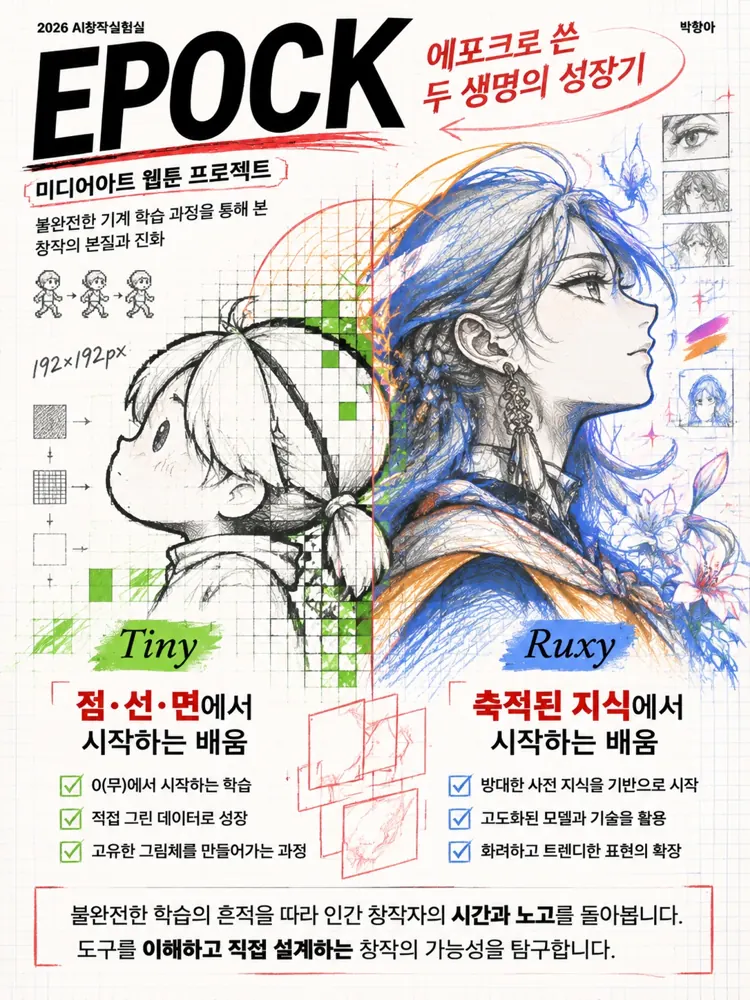

2026년 11월 16일 작가가 정한 기준입니다. AI가 혼자 살아가는 이야기가 아니라, 인간 자매가 AI 아바타를 만들고 SNS를 운영하는 이야기입니다. 글의 초안을 AI에게 맡겨도 무엇을 올릴지는 자매가 선택합니다. 이름은 Luxy로 통일하며 예전 Ruxy 표기는 오타였습니다.
동생은 조용하지만 호기심이 많고 끈기 있습니다. 처음에는 큰 계획을 말하고, 뒤에는 결과를 보며 기대하거나 조급해하고 작은 기쁨을 기록합니다. 성과가 없는 날은 “…”만 올릴 수도 있습니다.
언니는 야무지고 계획적입니다. 자신의 감각이 드러나는 프로필과 매력적인 디자인, 유용한 정보로 SNS를 꾸립니다. 디자인 도구, 무료 교육, 디지털 시민 교육 등을 작품 세계에 맞게 소개할 방향입니다.
1 epoch, 즉 학습 자료를 한 번 살펴보는 과정을 작품 속 하루로 정했습니다. 실제 컴퓨터 실행 시간과 작품 속 날짜는 따로 적습니다. 시작 날짜와 중단 후 다시 시작했을 때 게시물이 겹치지 않게 하는 방법은 더 설계해야 합니다. 이전의 “한 달” 대응안은 쓰지 않습니다.
이번에는 아바타를 만들고 SNS를 운영하는 과정을 보여 줍니다. 큰 사건과 결말은 다음 프로젝트에서 다룹니다. 어린 자매의 대사와 장면도 작가가 정합니다.
loss는 모델이 예측을 얼마나 틀렸는지 나타내는 숫자이지 감정이 아닙니다. 실제 결과를 관찰한 뒤, 인물이 그것을 어떻게 받아들일지 해석하고, 작가가 게시물을 선택합니다. 인물이 “선을 알게 됐어”라고 말해도 모델의 이해 능력이 증명된 것은 아닙니다.
A는 다른 모델이 미리 배운 내용을 가져오지 않고 기초부터 배우는 Tiny-UNet VR0.02 계열을 사용합니다. 빈 화면, 색, 선, 도형에서 사람 몸의 형태로 넓힐 수 있는지 시험합니다. 미리 학습된 VAE·CLIP을 사용했던 VR0.01은 옛 초안으로 보존합니다.
B는 Stable Diffusion 1.5에 캐릭터의 특징을 추가로 익히게 하는 LoRA 방향입니다. 10월에 검토한 CPT와 강한 과적합 방식으로 저절로 되돌아가지 않습니다.
컴퓨터 사용 시간이 끝나기 전에 학습 상태를 저장하고 다음에 이어 하는 것은 처음부터 세운 계획입니다. 실제로 잘 이어졌는지는 실행 기록으로 따로 확인합니다.
옛 문서의 이미지 크기, 사진 수, 동작 수, 카메라 각도 수, 학습 횟수는 당시의 가정입니다. 현재 확정값처럼 옮기지 않습니다. 도형 기초 실험과 인체 자료 준비, 그림 출력과 설명문 작성, 모델 학습도 각각 확인합니다.
Stable Diffusion과 완전히 호환된다거나 정해진 시간과 비용으로 끝난다고 보장하지 않습니다. 사용한 장치와 실제 실행 결과를 봅니다.
직접 만든 자료도 사용한 도구와 자산의 출처, 이용 조건을 확인해야 합니다. 저작권 위험이 전혀 없다고 보장하지 않습니다. 한 자료에 너무 맞춰 배우는 과적합과 모델 붕괴는 다른 문제이며, 이를 사람의 성격이나 성장률과 같다고 말하지 않습니다.
그림 생성 코드를 한 번 부르는 것만으로 완성된 확산 생성이 되지는 않습니다. 잡음을 여러 번 줄이는 과정, 입력 조건, 저장과 복원, 그림 품질을 각각 시험합니다. 모델 숫자만 저장한 파일과 학습 진행 상태까지 저장한 파일도 다릅니다.
최근 작가의 결정, 확인한 코드와 실행 자료, 날짜가 있는 원기획, 옛 제안을 구분해 읽습니다. AI가 쓴 자신 있는 설명이나 숫자가 곧 성과는 아닙니다. 옛 자료는 지우지 않고 바꾼 이유를 남깁니다. 공유받은 원문과 이미지를 모두 공개하지는 않으며 설명에 필요한 내용만 사용합니다.
2026년 11월 15일 정한 제작 방향입니다. 먼저 관심을 끄는 티저, Tiny와 Luxy의 개별 커버, 두 인물이 함께 나오는 메인 포스터를 하나의 시리즈로 연결합니다. 공통 배치와 행사 정보는 유지하고 작가의 펜 그림과 각 인물 소개를 나눠 담습니다. AI를 거친 이미지는 발표 때 공개할 방향입니다.
티저는 글자 중심으로 만들지, 중간보고회 이미지를 쓸지 검토 중입니다. 게시 순서와 날짜, 최종 그림과 문구, 색과 글꼴, 인쇄 방식은 아직 제작 중입니다. 아래 그림은 러프와 선화, 시각화안이며 파일 이름만 보고 최종 승인본이라고 판단하지 않습니다.
2026년 11월 30일 오후 3시, 제주콘텐츠코리아랩 머들코지에서 제작 과정을 발표할 예정입니다. 같은 날 오후 4시 30분에 웹 작품을 공개해 함께 감상할 계획입니다. 모두 한국시간입니다. 일정이 정해진 것과 자동 공개 기능의 구현·시험이 끝난 것은 다릅니다.


